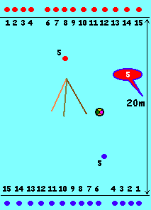
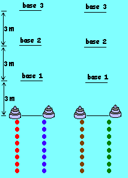
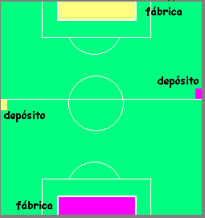

Nome:
Apague a Velinha
Cada patrulha recebe uma lata com uma vela
acesa dentro e uma seringa por elemento, além de uma panela com água. Esta lata
fica dentro de um círculo de um metro de diâmetro onde ninguém pode entrar. Cada
participante carrega também um lenço ou um cabo na cintura, que representa a sua
“vida”.
O objetivo, ao soar o apito é tentar apagar a vela das demais patrulhas, ao
mesmo tempo protegendo a sua. Quem perde a vida fica 30 segundos (ou 1 minuto)
fora do jogo, só então podendo retornar.
A chefia deve Ter latas com velas acesas de reserva, de forma a substituir as
que forem apagadas (atenção, pois as velas uma vez molhadas tornam-se bem mais
difíceis de serem acesas).
MATERIAL POR PATRULHA:
4 latas, 1 panela, 4 velas, fósforo, água
MATERIAL POR PARTICIPANTE:
seringa, lenço ou cabo
Nome:
Nós ao Alvo
REGRAS:
Espalhados pelo campos há diversos alvos, de
tamanho e formas diferentes. O objetivo é acertar estes alvos com a bola, que é
disputada pela tropa. Cada vez que alguém derruba o alvo informa a chefia o
mesmo e receberá o nome de um nó correspondente a ele. Deve então fazer o nó
pedido. Caso não consiga, o ponto não é validado.
Enquanto o jovem faz o nó, os demais prosseguem no jogo.
O mesmo alvo pode ter mais de um nó, alternando o que for pedido cada vez que o
mesmo for acertado.
OBS:
Cada jogador pode dar o máximo de 3 passos
com a bola antes de passá-la.
MATERIAL :
bola, latas e alvos diversos, cabos, tabelas
com nomes dos nós e nomes dos alvos.
Nome:
Latas Suspensas
REGRAS:
Cada patrulha escolhe um “lanceiro” que
segura um bastão com uma lata na ponta. Estes “lanceiros” ficam posicionados
dentro de círculos, onde mais ninguém pode entrar e de onde eles não podem sair.
Os demais disputam uma bola com a qual devem acertar a lata que o seu “lanceiro”
segura, fazendo-a cair. A lata não pode ser “deixada cair”, devendo realmente
ser derrubada pela bola, embora o “lanceiro” possa se movimentar para facilitar
para o seu time.
MATERIAL POR PATRULHA:
1 bastão e uma lata de nescau vazia.
MATERIAL GERAL:
Bola
Local:
Quadra
Nome:
Buzkashi
REGRAS:
Adaptação de um tradicional jogo do
Afeganistão praticado por Stallone “Cobra”. No jogo original dois times montados
a cavalo disputam a carcaça de um carneiro, que funciona como bola, que deve ser
levada de um canto a outro do campo.
Em nosso jogo os “cavalos” são os participantes que levam os outros nas costas,
os “cavaleiros” . O “carneiro” é uma grande almofada com alças e o objetivo da
mesma forma que no jogo original é pegar o “carneiro” e levá-lo ao canto oposto.
MATERIAL :
Almofada, que possa ser utilizada como
“Carneiro”
OBS:
Jogo muito ativo, com possíveis quedas, devendo ser praticado em local
preferencialmente em local gramado. Muito bom com muitos participantes em campo
de futebol.
Local:
amplo
Nome:
Aves Migratórias
Em uma extremidade ficam o Canadá e Estados Unidos, enquanto na outra está a
América do Sul tropical.
Chefe:
Vocês sabem o que acontece com as aves da América do Norte, quando se
aproxima o
inverno ?
(Após um tempo para respostas)...
Elas migram, em bandos, para as Américas Central e do Sul, percorrendo longas
distâncias, com formação em ponta de seta (forma de "V"), o que torna o vôo mais
eficiente, onde todos fazem menos esforço do que se voassem separados.
Chefe:
O que pode atrapalhar a migração das aves?
O Vento Forte, que lhes desvia do rumo, e as Nuvens de Chuva, que não podem ser
atravessadas.1/4 da tropa (uma ou duas patrulhas) serão os pássaros, ficando
numa ponta do pátio.
Um escoteiro bem forte (gordo) será o "Vento Forte".
Os demais, de mão dadas, formarão a "Nuvem Cinzenta".
Dado o sinal de apito, as aves partem em direção à América tropical - de mãos
dadas, sendo o
primeiro da fila, o guia da migração. Se for rompida a cadeia, eles devem
retornar ao ponto de partida e recomeçar novamente. No meio do trajeto, (ao
comando do outro chefe) a corrente migratória é atacada pelo "Vento Forte" que,
de braços cruzados, tenta romper a cadeia das aves.
- Os chefes devem manter atenção para evitar totalmente o uso das mãos, pés,
joelhos e cabeçadas, na tentativa de atacar ou defender. - Passando pelo "Vento
Forte" (ao comando do 3º chefe), a "Nuvem Cinzenta" (todos em fila e de mãos
dadas) vai tentar envolver as "Aves Migratórias", que tentarão abrir passagem
através da nuvem, para atingir seu objetivo.
Se os membros da nuvem conseguirem fechar um círculo, envolvendo totalmente as
aves
migratória, estas perdem o jogo.
Se furarem a nuvem - sem se soltarem uns dos outros nesse intento - e atingirem
a América
tropical, vencem o jogo !
Local:
amplo - maior que duas quadras.
Material:
Apito.
Nome:
Caça e Caçadores
Divide-se a tropa em duplas. Metade é composta por caçadores e a outra metade
pela caça.
O jogo consiste em que ao soar o apito a caça saia de sua base, e ao mesmo tempo
os caçadores, distantes cerca de cinco metros saiam para caçá-los. A caça
abraçada por um caçador está morto. Depois de algum tempo invertem-se os papéis,
e vence o time que tiver capturado mais "caça".
As duplas devem estar sempre de braços dados.
Nome:
Argola Indiana
Cada time tem um lanceiro, que fica atrás de sua meta. O objetivo é pegar o
“anel indiano” e acertar com ele a lança (bastão) de seu time. O “anel indiano”
consiste de uma corda com as extremidades amarradas formando um grande anel de
cerca de 40 cm de raio.
Caso duas pessoas retenham o anel ao mesmo tempo, o chefe deve apitar
interrompendo o jogo e prosseguir com o “anel ao alto”.
local:
amplo - quadra ou maior
material:
um bastão por equipe e o “anel indiano”.
Nome:
BOLA/TEMPO
Material:
bola e muitas bolas de meia
AMBIENTAÇÃO:
Delimita-se um quadrado, cada um dos seus
lados é defendido por uma das equipes. No centro desse quadrado coloca-se uma
bola normal de futebol. Objetivo das equipes é fazer com que a bola do centro
atinja o limite do campo defendido por uma das outras Patrulhas. A forma de
movimentar a bola é atingi-la com uma das bolas de meia. Como cada jovem tem sua
própria bola de meia, existirá bastante movimentação. Caso esteja muito difícil,
troque por uma bola mais leve.

Material:
3 bastões e 1 bola
Desenvolvimento:
Jogo de kim, com os objetos sendo observados
apenas durante o tempo em que caem do andar superior para o gramado. Uma banco
coberto com uma lona foi instalado , para evitar que continuem observando os
objetos após estarem no gramado. Foram recolhidos listas individuais. Duas
equipes (CIDADES) formadas na linha de fundos do campo, distante 20 m (vide
ilustração). Cada jovem é numerado. No centro um tripé (PREFEITURA), feito com 3
bastões encostados. Atendendo ao chamado do chefe, o jovem de cada equipe que
tiver o n.º. chamado (PREFEITO) corre ao centro, pega a bola e a atira para sua
CIDADE. Quando a CIDADE adversária estiver com a bola, o PREFEITO deve tentar
atrapalhar a derrubada da PREFEITURA. Quando a sua CIDADE estiver com a bola,
deve tentar evitar que o PREFEITO adversário atrapalhe a derrubada da
PREFEITURA. OBS: podem ser chamados dois números, que atuaram em conjunto como
PREFEITO e VICE.
Nome:
FORMANDO CÍRCULOS
Material:
nenhum
AMBIENTAÇÃO:
Como em toda reunião especial, um dos Chefes de Seção faz um jogo geral para
todos os ramos. Todo início de ano é bom arrumar a casa. Na semana passada
estávamos na sede cortando a grama e arrumando as salas. Separar os jovens em
grupos de 5 pessoas, misturando lobos, lobas, escoteiros, escoteiros, seniores
guias, pioneiros, pioneiras e escotistas. Formar círculos marcando bem quem é o
seu companheiro da direita e da esquerda. Em seguida colocar um círculo dentro
do outro, soltar as mãos e embaralhar as pessoas. Para e dá as mãos para os
companheiros e procura ficar ao lado de quem dava a mão originalmente, sem
soltar as mãos.
Nome:
CATA CABOS COM NÓS
Material:
30 cabos, 4 chefes
AMBIENTAÇÃO:
Ao sinal do apito os jovens se espalham em
área devidamente delimitada como um quadrado. Cada lado do quadrado será a base
de uma das equipes. Todos tem um cabo, cuja ponta é colocada dentro do bolso ou
no cós da calça. Ao sinal de novo apito, o nome de um nó é anunciado e todos
devem pegar um cabo de um jovem de uma outra Equipe, dar o nó solicitado e se
posicionar no lado indicado para sua equipe. Marca dois pontos a equipe do jovem
mais rápido e marca um ponto a equipe que todos terminarem mais rápido. Vence a
equipe com mais pontos.
Nome:
TORRE DE HANOI 
Material:
3 panelas diferentes
Jogo de kim, com os objetos sendo observados
apenas durante o tempo em que caem do andar superior para o gramado. Uma banco
coberto com uma lona foi instalado , para evitar que continuem observando os
objetos após estarem no gramado. Foram recolhidos listas individuais.
As equipes formadas em linha. Diante delas
tem a Torre de Hanoi (3 panelas a menor acima, a média no meio e a grande
embaixo). Explicar que a Torre de Hanoi nunca pode ter uma base pequena com um
topo grande; e que ela deve ser remontada novamente na base n.º 3. Só pode ser
transportada uma parte por vez, e andando sempre apenas uma base. Pode seguir
adiante e voltar se desejado, respeitada as demais regras. Dar um tempo de 1
minuto para estratégias. Ao sinal do apito o primeiro jovem da equipe pega uma
parte da Torre e a coloca na próxima base, retorna à equipe para que o próximo
jovem também faça o seu movimento. Assim se segue até que a Torre de Hanoi
esteja montada corretamente na Base n.º. 3. Vence a equipe que mais rápido
atingir o objetivo.
Ordem de realização:
1 patrulha de cada vez
Nome:
Círculos Andantes
Cada patrulha tem um senior que será o "andante". Ele possui dois círculos que
podem ser um bambolê ou um cabo com as pontas amarradas formando um círculo.O
objetivo do jogo é colocar a bola dentro do circulo. O jogo se desenvolve da
seguinte forma. Quando o chefe apita e a bola vai para o alto todos disputam-na
(só há uma) e tentam colocá-la no círculo de sua patrulha. O "andante" é o
responsável por "plantar" o círculo, ou seja, colocá-lo no chão. Quando o chefe
apita o andante deve recolher o círculo e colocá-lo em outro lugar distante do
outro. Entre os intervalos das apitadas os "andantes" podem disputar a bola, mas
contudo não podem coloca-la no círculo.
local:
quadra
material:
bola, bambolê por patrulha.
Nome: Handebol de Balão de Gás
Duas equipes. Cada uma tem um gol. O objetivo é fazer o gol na equipe contrária.
A bola é um balão de gás que nunca pode ser seguro. O balão somente será
impulsionado através de tapas com as mãos.
local: meia quadra
material: bolas de gás (várias pois há
risco de estourarem).
Nome: Estoura Canela
Cada participante prende um balão de gás atrás de cada tornozelo. O objetivo é,
com os pés, estourar os balões dos membros das outras equipes. Quem tem seus
dois balões estourados sai do jogo. O objetivo é ser a última equipe /
participante a sobrar.
local: quadra
material: dois balões de gás por
participante + balões reservas.
obs: bom jogo mesmo com a tropa pequena -
4 participantes.
Nome: Hoquei
Cada participante tem um bastão ou cabo de vassoura. O objetivo do jogo é, com o
bastão, impulsionar a bola até o gol adversário. As regras são como de futebol,
não valendo, obviamente, chutar a bola.
local: quadra
material: um cabo de vassoura por
participante. Uma bola pequena.
obs: CUIDADO com o "Bastão Alto"!!
Nome: Acertem os
Alvos
Espalhados pela quadra existem diversos alvos de diferentes tamanhos. O objetivo
das patrulhas é acertar estes alvos. Os alvos maiores (por ex: balde, garrafa de
big coke) tem valor menor do que o dos alvos menores (por ex. copo descartável,
pedra). As regras são como de basquetinho.
local: quadra
material: diversos alvos de
diferentes tamanhos e uma bola.
Nome: Futebol de Bola de Gás
Partida de futebol sem goleiro. A bola é um balão de gás. Se houver muita gente
podem haver mais de um balão. É importante que o gol seja grande, pois não é tão
fácil marcar gol.
local: quadra
material: vários balões de gás.
Nome: Apagavela
Cada patrulha tem uma (ou várias ) vela acesa colocada dentro de um círculo onde
ninguém pode entrar. Cada integrante da tropa tem uma seringa. O objetivo é
encher a seringa com água em uma das panelas que fica no centro da quadra e
tentar apagar as velas das demais patrulhas. Vence a patrulha que ao final do
jogo tiver o maior numero de velas acesas.
data:02/99
local: quadra
material: uma seringa por senior, uma ou mais velas por patrulha.
Nome: Aviões ao Alvo
Cada equipe recebe uma pilha de revistas com as quais devem fazer aviões de
papel que devem atirar e acertar em um alvo colocado na área da outra patrulha.
Dentro desta área ninguém pode entrar. Vence a patrulha que acertar o maior
número de aviões no alvo.
local: quadra
material: revistas diversas e "alvos" -
que podem ser caixotes de papelão.
Nome: Bola ao Cesto com Senior Numerado
Numera-se os elementos de cada patrulha. Quando a chefia fala um numero, cada
elemento que tem este numero (um de cada patrulha) corre até a área central e
tenta pegar a única bola que existe lá e colocá-la dentro de um balde. Vence a
patrulha que atingir este objetivo o maior número de vezes.
local: meia quadra
material: bola e balde
Nome: Volei de Palitinho
Cada senior recebe dois palitinhos tipo de sorvete (abaixador de língua). O
objetivo é, com os palitinhos, jogar uma partida de volei. Não vale usar as mãos
e a bola de gás pode ser tocada no máximo 4 vezes antes de passar para o lado
adversário. O saque deve ser realizado bem de perto.
local: meia quadra
material: dois palitinhos por senior,
balões de gás
Nome: LÍQUIDO
PRECIOSO
Material: vide abaixo
AMBIENTAÇÃO: Alguns dizem quem é lenda,
outros dizem que é verdade. Dizem que os Incas fabricavam duas bebidas muito
populares entre eles. Uma era dourada e a outra escarlate. Dizem também, que
essa bebida era muito difícil de ser fabricada e por isso era muito preciosa.
Nossa tarefa será levar essa bebida da fábrica ao depósito, em segurança e com
rapidez. Vence a equipe que tiver mais líquido guardado, quando soar os 3
apitas. MATERIAL: 1 Fanta laranja; 1 Fanta uva; 2 garrafas vazias; 1 copinho
para cada participante; 2 chefes para distribuir o líquido e 2 chefes para
segurar garrafa do depósito.

Material: nenhum
Desenvolvimento:
Cada equipe deve reunir o maior n.º de pinhas que existem nas proximidades. A
coleta inicia ao sinal do apito e ao sinal de outro apito todos devem parar e
reunir as pinhas para serem contadas. Vence a patrulha que obteve mais êxitos.
Obs. as pinhas serão usadas no Fogo de Conselho.
Material: Lenços Escoteiros,
esponjas, balde de água e tinta guache (não tóxica)
Desenvolvimento:
Todos os jovens são marcados com uma cruz (ou outro símbolo) no braço direito. É
a marca do feitiço das bruxas de NorteYork. Dois dos jovens são escolhidos como
os ‘caçadores de bruxas'. Esses dois jovens terão lenços amarrados na cabeça
(cobertura para diferenciar) e trazem consigo uma esponja molhada. E cabe-lhes
‘libertar' as pessoas do feitiço, bastando tirar a marca do braço. Os jogadores
‘libertados' serão novos caçadores. Ao final do jogo, vencerão as bruxas se
sobrarem pelo menos duas delas. E os caçadores se não sobrar nenhuma das bruxas.
O jogo terá um tempo determinado.
Material: apitos
Desenvolvimento:
Cada chefe chama a Tropa e dá um sinal de formação diferente. A cada nova
chamada, a Tropa ficava mais próximo do local do banho.
Nome: GLADIADOR CEGO
Material: lenço e porrete de jornal
Desenvolvimento:
Formar um círculo. Pedir para um jovem de uma das equipes ficar no centro,
vendado e com um porrete de jornal (jornal enrolado preso com durex). Uma das
patrulhas (não a do jovem) é indicada para tentar tocar o gladiador, sem ser
atingido pelo mesmo. Conta-se o n.º dos que conseguiram e dos que não
conseguiram. Troca-se o gladiador e a Patrulha que tentará o toque. Vence a
patrulha que obteve mais êxitos.
Nome: A MURALHA
Material: nenhum
Desenvolvimento:
Duas equipes formadas na linha de fundos do campo. No centro do campo dois
pegadores. Ao sinal do apito as equipes devem trocar de lado. Quem for tocado
pelos pegadores passará a ficar no centro do campo, no local indicado pelos
pegadores, formando uma muralha. Os demais jogadores não podem pular sobre a
muralha, ou passar sob ela, uma vez que ela é maciça. Logo, haverá muita gente
na muralha e restará pouco espaço para os que devem trocar de lado. Vence os
jovem que mais demorarem a serem transformados em muralha.
Nome: CERTO OU
ERRADO
Material: 4 lenços e sisal
Desenvolvimento:
Formar duas equipes em linhas, distante 3 m uma da outra. Uma delas defende o
CERTO a outra defende o ERRADO. É anunciada uma frase. Ao sinal do apito, se a
frase estiver correta, a equipe que defende o CERTO correrá atrás da turma do
ERRADO. Quem for tocado, paga uma prenda (qualquer objeto). Vence a equipe que
tiver menos objetos como prenda.
Nome: Laçadores do
Nordeste
Material: Nenhum
Desenvolvimento:
Todos os jovens serão ‘bois'. Dois dos jovens serão os Laçadores. Eles terão
como objetivo colocar cada ‘boi' dentro de um espaço, previamente determinado
como celeiro. Para isso utilizarão de todos os expedientes possíveis, somente
utilizando as mãos. Não poderá haver ajuda no salvamento. Ao final de jogo
vencerão os vaqueiros se conseguirem prender mais da metade dos ‘bois', e os
‘bois' se menos da metade estiver presa no celeiro. Importante - o tempo deverá
ser curto, para evitar que os jogadores fiquem presos muito tempo, evitando o
ócio.
Nome: Enchendo a
casa
Material: 15 bolas de papel (jornal) para
cada equipe
Desenvolvimento:
Marca-se no campo de jogo o canto de cada equipe, e nele se colocam as bolas de
papel. Marca-se também um grande círculo, que consiga abranger os cantos de
todas as equipes. Explica-se ao grupo de jogadores que todos deverão correr no
sentido horário. O jogo consiste em que cada membro da equipe, correndo no
sentido horário, apanhe uma bola em cada mão, e coloque no seu canto,
percorrendo o círculo todo. Vencerá a equipe que ao final de determinado tempo
tiver o maior número de bolas em seu canto. Quando for dado o sinal de
encerramento do jogo, os jovens que tiverem bolas em suas mãos, deverão levá-las
para o seu canto.
Nome: Esponjobol /
Basquete de Sabonetes
Material: Um balde para cada
equipe e um quadrado de esponja de tamanho médio / Sabonete
Desenvolvimento:
Marca-se um campo de jogo retangular, suficiente para uma partida de basquetinho
entre as equipes. Coloca-se em cada extremo um balde com água. E dentro de um
deles a esponja (ou sabonete, dependendo do jogo). Ao sinal de início, será
jogado uma partida de basquetinho (regras adaptadas aos jovens). E vence a
Patrulha que conseguir maior número de pontos.
Nota: Não vale ‘guardar caixão' (ficar junto ao balde impedindo que a
esponja/sabonete entre). Para isso seria prudente o aplicador marcar uma linha
neutra, em volta do balde, onde nenhuma das equipes pudesse ficar.
Nome: Pandemônio
Material: Fichas com tarefas (uma
por equipe)
Desenvolvimento:
Cada equipe receberá uma tarefa para ser cumprida em determinado período de
tempo. As tarefas seguirão o seguinte estilo:
Equipe 1 - Tire os tênis das demais equipes. Não deixe que ninguém prenda uma
fita em vocês!
Equipe 2 - Prenda uma fita nos membros das outras equipes. Não deixem que tirem
os tênis de vocês!
Equipe 3 - Evite que a Equipe 1 cumpra sua tarefa.
E assim sucessivamente.
Nota: Esse jogo será mais
proveitoso para os Ramos Escoteiro e Sênior.
Nome: Pique
Baratinha
Material: Nenhum
Desenvolvimento:
Dentro da equipe será escolhido um(a) jovem para ser o(a) ‘inseticida". Os
demais membros serão as ‘baratinhas'. O jogo consiste em um ‘pega-pega', onde o
‘inseticida' toque a ‘baratinha'. Para evitar ser pega, a ‘baratinha' deve
deitar no chão, de pernas para o alto, e mexer com os braços e as pernas
(imitando uma baratinha), no que o ‘inseticida' deverá deixar aquele membro
fugir. Caso uma ‘baratinha' seja pega pelo ‘inseticida', ajudará o pegador
(inseticida).
Nome: Scalps
Material: Lenços Escoteiros
Desenvolvimento:
Todos passam o lenço pelo cinto ou prendem na borda da bermuda. Os lenços devem
ficar bem visíveis e não deverão ficar amarrados.
O jogo se desenrola na tentativa dos jovens retirarem os 'scapls' dos
outros evitando que o seu próprio seja retirado.
Nome: Futebol de uma
regra
Material: Uma bola e um apito.
Desenvolvimento:
O jogo é um futebol com uma área mais limitada, sem goleiro e com apenas uma
regra - ‘não pode machucar o adversário’.
Marcam-se dois tempos, de 5 minutos cada, ou estipula-se o placar, tipo: ‘- Quem
fizer dois pontos (gols) ganha!’.
Nome: De mão
em mão
Material: Uma bola, um relógio e
apito.
Desenvolvimento:
Delimita-se um campo de jogo proporcional ao número de participantes. Divide-se
o número de jovens em duas equipes.
Uma será a detentora da bola. O objetivo da primeira será manter em seu poder a
bola por mais de dois minutos (o tempo deverá ser acordado entre as equipes). O
objetivo da segunda é a de interceptar a bola, e então como detentora da bola,
mantê-la sob domínio por dois minutos.
É imprescindível que haja uma regra determinando que a bola passe de mão em mão,
evitando ficar com um só jovem. Andar e correr com a bola é permitido.
Nome: CAÇA AO
ESCALPO
Material: 1 lenço
Desenvolvimento:
Duas equipes formadas na linha de fundos do campo. Cada um numerado. No centro
do campo um ESCALPO (lenço). Um n.º é chamado e os jovens de cada equipe correm
ao centro e pegam o lenço e retornam para sua equipe. Quem não pegou o lenço,
pode tocar o outro para pegá-lo. Marca ponto quem conseguiu fugir ou quem
conseguiu tocar o adversário, após pegar o lenço. Reforçar sempre que a mão
esquerda deve ficar para trás. Vence a equipe com mais pontos, após algumas
rodadas.